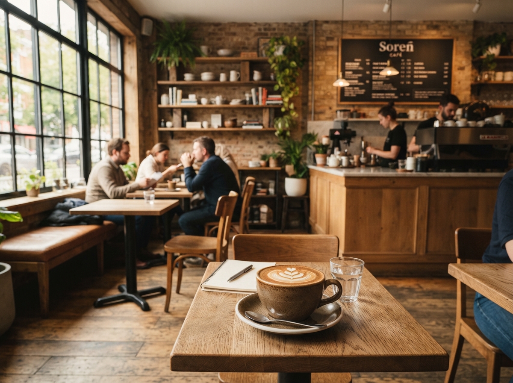
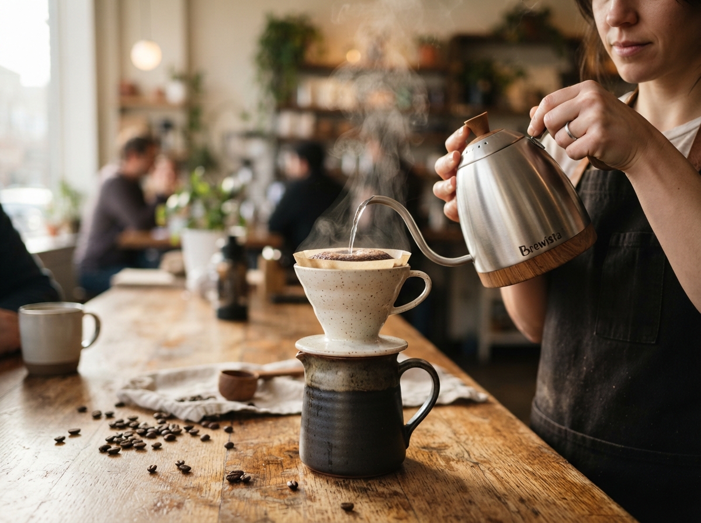

تولد ایده و اولین فنجان اسپرسو
کافه سورن با یک میز چوبی دستساز، یک دستگاه اسپرسوی تکگروپ و یک باور عمیق آغاز به کار کرد: خلق خلوتی دنج و آرام که کیفیت طعم در آن قربانی شتاب روزمرگی نشود.
در شلوغی شتابزده شهر، کافه سورن پناهگاهی دنج برای مکث و نفس کشیدن است؛ جایی که کیفیت ناب دانههای برشتهشده تخصصی، گرمای میزبانی اصیل و عطر دلپذیر شیرینیهای دستپخت، سادهترین لحظات روز شما را به تجربهای عمیق و ماندگار تبدیل میکند.

مسیر شکلگیری و تکامل کافه سورن بر مبنای اشتیاق به طعم ناب و بازتعریف تجربه کافهنشینی.
کافه سورن با یک میز چوبی دستساز، یک دستگاه اسپرسوی تکگروپ و یک باور عمیق آغاز به کار کرد: خلق خلوتی دنج و آرام که کیفیت طعم در آن قربانی شتاب روزمرگی نشود.
با گسترش جامعه همراهان سورن، کارگاه برشتهکاری اختصاصی کافه تأسیس شد. تمرکز بیواسطه بر پروفایلهای دمآوری سبک و جلسات روزانه کاپینگ برای کشف نوتهای عطری ناب میوهای و آجیلی.
امروز کافه سورن فضایی پویا برای علاقهمندان به قهوه تخصصی، شیرینیهای تازه و گفتوگوهای آرام است؛ تجهیزشده به پلتفرم سفارش آنلاین سریع و وفادار به سنت میزبانی اصیل.

سه باور ساده که هویت، طعم و تجربه حضور در سورن را میسازند.
دانههای تازه برشتهشده؛ طعمی ناب در هر جرعه.
وسواس در عصارهگیری؛ تعادل بینقص طعم و عطر.
اتمسفری آرام؛ خلوتی دنج به دور از هیاهو.
این پروژه حاصل همافزایی طراحی مدرن رابط کاربری و معماری فنی جهت ارائه بینقصترین تجربه است.
طراحی سیستم دیزاین اختصاصی، تایپوگرافی دوگانه، معماری اجزای تعاملی فرانتاند و پیادهسازی موشنهای طبیعی و فیزیکی رابط کاربری کافه سورن.
توسعه معماری سرویسها، ارتباطات بلادرنگ وبسوکت، طراحی ساختار دادههای منو و سبد خرید و پیادهسازی بهینه APIهای بکاند.
از اسپرسوی ناب روزانه تا شیرینیهای خوشطعم و گرم، همه چیز مهیاست تا یک روز بهیادماندنی و آرام را در کنار هم تجربه کنیم.